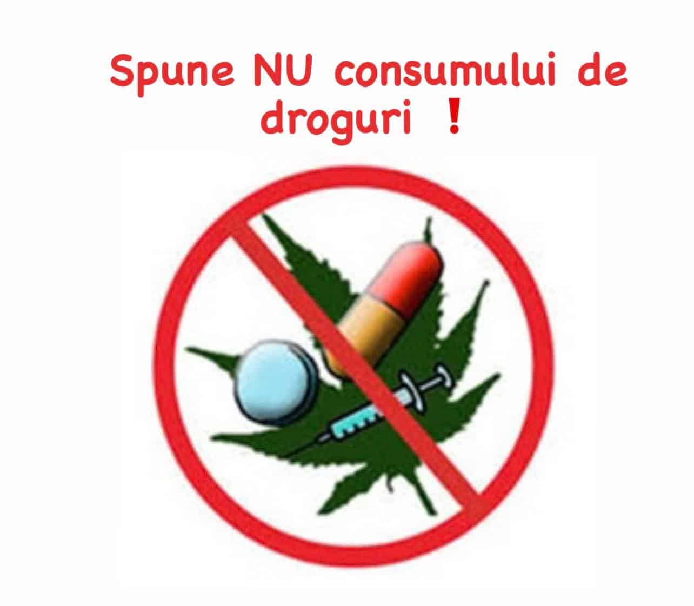

RoDX este un instrument Web de analiza si vizualizare la consumul de droguri in ultimii 3 ani, in corelatie cu infractiunile si confiscarile efectuate, plus urgentele medicale si campaniile de prevenire a consului de stupefiante.
Datele statistice cu privire la situatia drogurilor in Romania au fost preluate de pe site-ul data.gov.ro.
